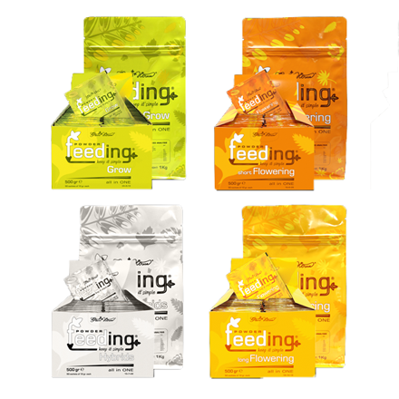
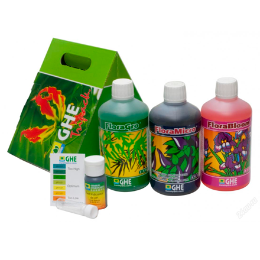

Правильное питание — это ключ к получению плотных, смолистых шишек и здоровой корневой системы. Удобрения для марихуаны должны соответствовать фазе развития растения, так как потребности в элементах питания меняются в процессе роста.
Что такое NPK?
На любом флаконе с удобрениями вы увидите три буквы — N, P, K. Это основные макроэлементы, необходимые растению:

N (Азот)
Отвечает за рост зеленой массы, развитие листьев и стеблей. Критически важен на стадии вегетации.
P (Фосфор)

Стимулирует развитие корневой системы и формирование соцветий. Максимально нужен в начале цветения.
K (Калий)
Регулирует водный баланс и обмен веществ. Повышает иммунитет и увеличивает плотность и вес шишек.

Типы удобрений
Органические
Биогумус, компост, рыбная эмульсия. Действуют медленно, улучшают структуру почвы, безопасны при передозировке.
Минеральные
Синтетические соли. Действуют мгновенно, позволяют точно дозировать элементы, идеально подходят для гидропоники.
Жидкие vs Порошки

Жидкие удобрения легче дозировать, порошки хранятся дольше и часто стоят дешевле в пересчете на объем.
График подкормки
Общий принцип питания по фазам:

- Стадия рассады: Минимальное питание или только стимуляторы корнеобразования.
- Вегетация: Акцент на Азот (N). Формируем мощный «скелет» растения.
- Цветение: Переход на Фосфор (P) и Калий (K). Снижаем азот, чтобы не тормозить развитие шишек.
- Промывка (Flush): За 1-2 недели до сбора урожая поливаем только чистой водой, чтобы растение израсходовало все запасы удобрений (улучшает вкус).
🌿 Хотите идеальный урожай?
Правильный полив так же важен, как и удобрения. Узнайте, как настроить систему полива.
Системы полива